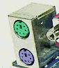

硬件基础教程
作者：TeliuTe 来源：基础教程网
鼠标是一个按钮点击设备，对应在桌面上显示一个指针，下面我们来看一个练习；
1、鼠标种类
1）早先的鼠标是接在串口上，接口是梯形的，现在已经很少见；
2）PS/2鼠标，接口是小圆孔的，跟键盘类似，鼠标的颜色是绿色的，类似的还有 USB 接口，这些都是机械鼠标，
紫色接口是插键盘的；

3）光电鼠标，使用红色或蓝色光线来精确定位指针，比较轻巧准确；
2、鼠标维护
1）使用鼠标垫，一方面移动方便灵活，另一方面也减少磨损和灰尘；
2）对于机械鼠标，使用一段时间后，里面的滚轮会沾上泥垢，把鼠标翻过来，按箭头方向拧开后盖，用牙签或刮片清理滚轴上的污物；
3）按鼠标按键的时候，注意轻巧灵活，避免摔碰鼠标；
本节学习了，如果你成功地完成了练习，请继续学习下一课内容；
本教程由86团学校TeliuTe制作|著作权所有
基础教程网：http://teliute.org/
美丽的校园……
转载和引用本站内容，请保留作者和本站链接。